Day 5: Information, Surprise, and What Music Tells Us#
Date: Thursday 25 June 2026
What does it mean to say a melody is “complex”?
How does the answer change depending on what the listener already knows?
Can we measure surprise? And if so, whose surprise?
# Setup: clone repo if in Colab, add utils to path, import libraries
import os, sys, subprocess
from pathlib import Path
import glob
import pandas as pd
import numpy as np
import matplotlib.pyplot as plt
import seaborn as sns
from scipy import stats
from scipy.stats import ttest_ind, linregress, pearsonr
repo_url = 'https://github.com/shanahdt/huji_summer_class_2026.git'
repo_name = 'huji_summer_class_2026'
if not os.path.exists('../data'):
if not os.path.exists(f'/content/{repo_name}'):
subprocess.run(['git', 'clone', repo_url], check=True)
os.chdir(f'/content/{repo_name}/notebooks')
print('Cloned and ready.')
else:
print('Running locally -- data directory found.')
repo_root = os.path.abspath('..')
if repo_root not in sys.path:
sys.path.insert(0, repo_root)
sns.set_theme(style='whitegrid', font_scale=1.1)
plt.rcParams['figure.figsize'] = (10, 4)
print('Setup complete.')
Running locally -- data directory found.
Setup complete.
Part 1: The Prehistory of Entropy#
Jon Barwise (1986) described the challenge of information theory with a railway metaphor: one track heads east trying to understand how agents process information; another heads west trying to understand what information is. “One hopes that these tracks will meet.”
Today we’re going to focus on the the early attempts to quantify “complexity” in music (which is often conflated with aesthetic ideas of “beauty”), through Claude Shannon’s mathematical theory, to modern computational models of musical expectation.
At each stage, the same question keeps coming back: whose idea of a listener are we modeling?
Hartley (1928): information without probability#
Ralph Hartley’s 1928 formula:
H = n log₂ s
where n = number of symbols, s = number of possible values.
Applied to the two fight songs in the Acevedo/Shanahan chapter:
UConn fight song: 85 notes, 12 possible pitch classes
Northwestern fight song: 142 notes, 12 possible pitch classes
The obvious problem: Northwestern scores higher only because it has more notes. A melody that repeats the same note 142 times gets the same Hartley score as one that uses all 12 pitch classes with perfect equality. Hartley has no concept of probability.
from utils import hartley_information
# Hartley (1928): H = n x log2(s)
# Counts bits needed to identify one melody out of all possible
# melodies of that length, assuming all pitches equally likely
hartley_information(142, 12) # Northwestern fight song
hartley_information(85, 12) # UConn fight song
hartley_information(142, 12) # 142-note monotone -- same answer!
142 notes with 12 possible values = 509.06 bits (Hartley 1928)
85 notes with 12 possible values = 304.72 bits (Hartley 1928)
142 notes with 12 possible values = 509.06 bits (Hartley 1928)
509.0646751024042
What just happened – and what’s wrong with it#
Hartley’s formula H = n x log2(s) counts how many bits you need to identify one specific melody out of all possible melodies of that length, assuming every pitch is equally likely.
The Northwestern fight song (142 notes) and a 142-note drone on a single pitch get identical scores – because Hartley has no mechanism for the fact that some pitches are common and others are rare. He treats every sequence of 142 notes as equally probable.
This is the fundamental limitation: Hartley measures the size of the message space, not the actual distribution of symbols within the message. Shannon fixes this by weighting each symbol by its actual probability – so a common pitch contributes less information than a rare one.
Birkhoff (1933): beauty as order over complexity#
George Birkhoff proposed: M = O/C – beauty equals order divided by complexity.
The assumptions baked in:
Beauty can be measured
It is tied to pattern recognition
It is universal across musical cultures
For musical “order,” Birkhoff used Ebenezer Prout’s counterpoint rules from 1890 – rating sequences as “good,” “possible,” or “bad.”
It’s worth considering what this would mean for a corpus that doesn’t align with these rules. For example, a fight song? A Carnatic raga? Birkhoff’s answer was whatever Western counterpoint rules said. His listener was actually a very specific listener.
Shannon (1948): adding probability#
Claude Shannon’s key move: instead of counting symbols, weight by how likely each symbol is.
H(X) = −Σ p(x) log₂ p(x)
Rare events carry more information than common ones. If Q is followed by U 99% of the time, that U conveys almost no information. If 7̂ resolves to 1̂ 80% of the time in tonal music, that resolution is low-information – expected.
Shannon demonstrated this by having his wife predict letters in a Raymond Chandler novel one at a time. She got better as she went along, and made most errors at the beginning of words – when context was thin. The musical parallel: we expect more at phrase endings than at phrase beginnings.
Pinkerton (1956) applied this directly to melody, writing that “the composer of a melody must make the entropy of his music low enough to give it an apparent pattern and at the same time high enough so that it has sufficient complexity to be interesting.”
Part 2: Entropy in Code#
Shannon entropy can be applied to music at three levels:
Unigram entropy: how spread out is the pitch distribution? (how often does each note appear?)
Conditional entropy: how predictable are note-to-note transitions? (how much does knowing the previous note help?)
Cross-entropy: how surprising is this piece to a listener trained on a different style? (IDyOM – we get to this in Part 6.)
Crucially: the answer to each question depends entirely on what you choose to measure. The same piece has different entropy values depending on whether you measure pitch names, scale degrees, intervals, or contour.
# Compute Shannon entropy for Happy Birthday across 6 representations
# This shows that entropy is a property of the representation, not the piece
from utils import compare_entropy_representations
compare_entropy_representations('../data/happy_birthday.krn', plot=True)
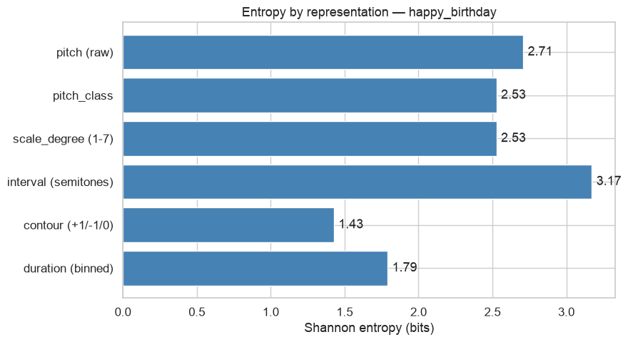
| representation | entropy | n_unique_symbols | n_events | |
|---|---|---|---|---|
| 0 | pitch (raw) | 2.709275 | 8 | 25 |
| 1 | pitch_class | 2.528102 | 7 | 25 |
| 2 | scale_degree (1-7) | 2.528102 | 7 | 25 |
| 3 | interval (semitones) | 3.173533 | 11 | 24 |
| 4 | contour (+1/-1/0) | 1.428412 | 3 | 24 |
| 5 | duration (binned) | 1.791737 | 5 | 25 |
What does this mean?#
The same piece – the same sequence of notes – has different entropy values depending on what you choose to measure:
Pitch names (G4, A4, B4…): each pitch is unique, many symbols, moderate entropy
Pitch classes (0-11): collapses octaves, fewer symbols
Scale degrees (1-7): normalizes to key, captures tonal function
Intervals (semitones): captures motion between notes, key-independent
Contour (+1/0/-1): collapses all interval information to just direction
Durations: captures rhythmic variety (Note lengths are grouped into standard categories (eighth, quarter, dotted quarter, half, etc.) and entropy is computed over those categories rather than exact float values. The moderate entropy reflects that Happy Birthday has a characteristic dotted quarter–eighth rhythmic pattern that repeats heavily — rhythm here is more predictable than pitch, which makes musical sense: you probably knew the rhythm before you could name the notes.)
Much like we’ve been discusing for most of this class, every entropy value is an entropy value FOR A SPECIFIC REPRESENTATION. The representation choice is aclaim about what matters about music.
# Compute Shannon entropy for every piece in the Czech Essen corpus
# Returns a DataFrame so we can do statistics on the distribution
from utils import corpus_entropy_profile
czech_entropy = corpus_entropy_profile(
'../data/Essen/Czech',
representation='scale_degree',
verbose=False,
plot=True)
czech_entropy.head(10)
43 piece(s) — entropy (scale_degree): mean=2.456, median=2.491, min=1.797, max=2.766
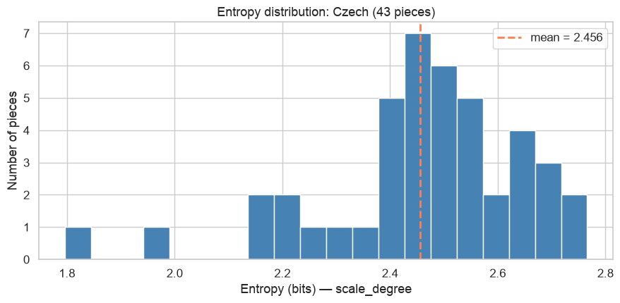
| tune_id | entropy | n_notes | |
|---|---|---|---|
| 0 | czech01 | 2.626678 | 30 |
| 1 | czech02 | 2.501930 | 26 |
| 2 | czech03 | 2.393582 | 18 |
| 3 | czech04 | 2.545090 | 26 |
| 4 | czech05 | 2.188722 | 12 |
| 5 | czech06 | 2.398873 | 31 |
| 6 | czech07 | 2.341496 | 31 |
| 7 | czech08 | 2.622901 | 26 |
| 8 | czech09 | 2.491205 | 27 |
| 9 | czech10 | 2.664545 | 29 |
# Compare how predictable note-to-note transitions are in two corpora
# Conditional entropy H(X_n | X_(n-1)) answers:
# once you know the previous note, how uncertain is the next one?
from utils import compare_corpus_conditional_entropy
compare_corpus_conditional_entropy(
'../data/Essen/Czech',
'../data/charlie_parker_no_chords',
names=('Czech folk', 'Charlie Parker'),
n=2,
plot=True,
verbose=False)
H(note | previous 1) — Czech folk: 2.368 bits
H(note | previous 1) — Charlie Parker: 2.765 bits
Difference (Czech folk - Charlie Parker): -0.397 bits
{kind=link}
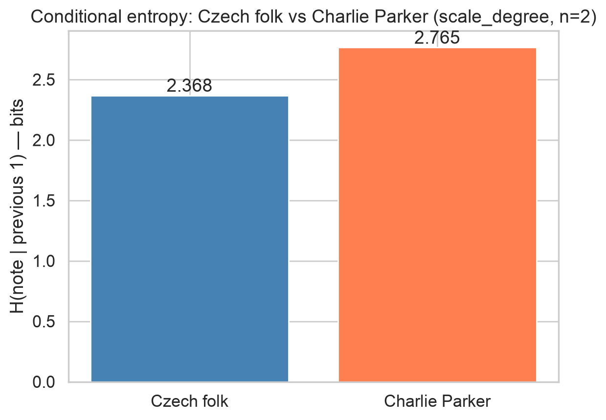
{'entropy_a': 2.3684158395985833,
'entropy_b': 2.765347720966176,
'difference': -0.3969318813675926,
'n': 2,
'names': ('Czech folk', 'Charlie Parker')}
What does this tell us musically?#
Czech folk: 2.528 bits — Charlie Parker: 3.100 bits
The conditional entropy H(note | previous note) answers: once you know what note just happened, how uncertain are you about the next one?
With this measurement, Czech folk songs are more predictable at the note-to-note level. Knowing the current scale degree significantly narrows down what comes next — these melodies tend to move by step, return to the tonic frequently, and follow well-worn melodic paths that any Central European folk tradition would recognize. The previous note is a strong guide to the next one.
Charlie Parker is considerably less predictable at the same level of analysis.
One important caveat: this is measured in scale degrees relative to the detected key. For bebop, that key detection is unreliable — Parker’s solos move through multiple key centers within a single phrase, so many notes that are “chromatic” in the detected key are actually functioning diatonically in a momentary harmonic context.
What happens when we change n?#
The n=2 in our analysis means we’re computing bigram conditional
entropy — given the previous 1 note, how uncertain is the next one?
But we could ask a richer question: given the previous 2 notes, how uncertain is the next one? Or the previous 3?
As n increases, conditional entropy will generally decrease for both corpora — more context means more predictability. But the rate at which it decreases tells you something interesting.
If conditional entropy drops steeply as n increases: the style has strong longer-range patterns. Knowing two or three previous notes locks in the next one much more tightly than knowing just one. This is characteristic of music with strong melodic formulae — sequences, repeated patterns, idiomatic scale runs.
If conditional entropy drops slowly: the style’s predictability is mostly local. One note gives you a lot of information, but two notes don’t give you much more than one. The style is predictable in its individual moves but not in its larger patterns.
The practical problem with large n: as n grows, the number of possible n-gram contexts grows exponentially — and most of them will never appear in your corpus. With n=4 in a corpus of 200 Czech folksongs, many four-note contexts will have been observed only once or twice, making the conditional probability estimates unreliable.
If you’re working with a small-ish corpus n=2 is probably the most you can trust. For larger corpora like the full Essen collection, n=3 is reasonable. n=4 and above require either a very large corpus or smoothing techniques beyond what we cover here.
Hypothesis! Comparing Musical Styles#
Joseph Youngblood (1958) compared entropy in Romantic songs (Mendelssohn, Schubert, Schumann) to Gregorian chant and concluded that chant had higher redundancy – lower information content.
But he analyzed Gregorian chant using a modern seven-tone diatonic system that chant was never designed for. We can’t replicate his exact experiment, but we can test a related version: do two regional folk traditions with different modal characteristics show significantly different entropy?
Dutch folk songs (Nederlan) are largely major-mode and diatonic. Russian folk songs (Rossiya) use more modal and pentatonic patterns.
Prediction (write before running):
H1: (let’s work through this as a class)
How we will do this: a t-test comparing the distributions of entropy per tune.
from utils import corpus_entropy_profile
from scipy.stats import ttest_ind
###loading the corpora
dutch = corpus_entropy_profile(
'../data/Essen/Nederlan',
representation='scale_degree',
pattern='**/*.krn',
verbose=False, plot=False)
rossiya = corpus_entropy_profile(
'../data/Essen/Rossiya',
representation='scale_degree',
verbose=False, plot=False)
###running the t-test
t, p = ttest_ind(dutch['entropy'].dropna(),
rossiya['entropy'].dropna())
###printing the results
print(f'Dutch folk -- mean entropy: {dutch["entropy"].mean():.3f}, '
f'SD: {dutch["entropy"].std():.3f}, n={len(dutch)}')
print(f'Russian folk -- mean entropy: {rossiya["entropy"].mean():.3f}, '
f'SD: {rossiya["entropy"].std():.3f}, n={len(rossiya)}')
print()
print(f't = {t:.3f}')
print(f'p = {p:.4f}')
# These are all plotting functions!
fig, ax = plt.subplots(figsize=(9, 4))
ax.hist(dutch['entropy'].dropna(), bins=20, alpha=0.6,
label='Dutch (Nederlan)', color='steelblue')
ax.hist(rossiya['entropy'].dropna(), bins=20, alpha=0.6,
label='Russian (Rossiya)', color='coral')
ax.axvline(dutch['entropy'].mean(), color='steelblue',
linestyle='--', label='Dutch mean')
ax.axvline(rossiya['entropy'].mean(), color='coral',
linestyle='--', label='Russian mean')
ax.set_xlabel('Shannon entropy (scale degrees)')
ax.set_ylabel('Number of pieces')
ax.set_title('Entropy distribution: Dutch vs Russian Essen folksongs')
ax.legend()
plt.tight_layout()
plt.show()
85 piece(s) — entropy (scale_degree): mean=2.474, median=2.498, min=1.811, max=2.818
37 piece(s) — entropy (scale_degree): mean=2.392, median=2.479, min=1.677, max=2.735
Dutch folk -- mean entropy: 2.474, SD: 0.174, n=85
Russian folk -- mean entropy: 2.392, SD: 0.266, n=37
t = 2.037
p = 0.0439
{kind=link}
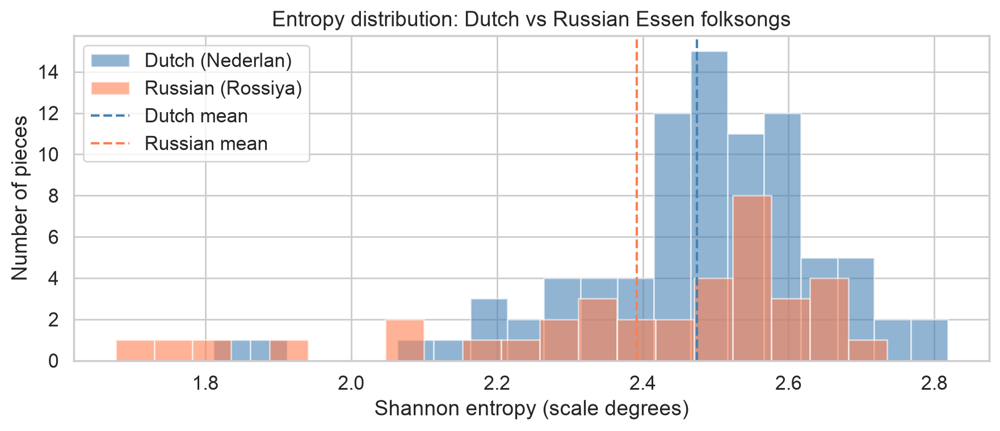
Exercise:#
Work through two corpora, state your hypothesis a priori, state your null hypothesis, and work through the code.
### your code here!
Part 3: Entropy Over Time – The Diachronic Hypothesis#
Hiller and Bean (1966) analyzed sonata expositions by Mozart, Beethoven, Berg, and Hindemith and found entropy increased chronologically. This is one of the most cited results in information-theoretic musicology.
H1: Entropy (scale degree) increases significantly over time in the Western art music corpus.
H0: No significant linear relationship between year and entropy.
Before running any analysis, write your predictions:
Direction of slope: positive or negative?
Expected r² strength: weak (<0.1), moderate (0.1-0.3), strong (>0.3)?
Which representation will show the strongest trend?
Will folk music show the same diachronic trend?
(Write predictions here before running)
# Diachronic entropy using approximate midpoint dates per composer
# More reliable than kern header dates, which are inconsistently encoded
import glob
from utils import corpus_entropy_profile
COMPOSER_CORPORA = {
'Machaut': ('../data/humdrum_scores/Machaut', 1360),
'Corelli': ('../data/humdrum_scores/Corelli', 1683),
'Bach': ('../data/humdrum_scores/Bach/ArtFugue', 1717),
'Haydn': ('../data/humdrum_scores/Haydn/Quartets.all', 1776),
'Mozart': ('../data/humdrum_scores/Mozart/Quartets.Str', 1773),
'Beethoven': ('../data/humdrum_scores/Beethoven/Quartets.Str', 1798),
'Chopin': ('../data/humdrum_scores/Chopin/Preludes', 1829),
}
rows = []
for composer, (kern_dir, midyear) in COMPOSER_CORPORA.items():
print(f'Computing entropy for {composer}...')
profile = corpus_entropy_profile(
kern_dir,
representation='scale_degree',
verbose=False, plot=False)
profile['composer'] = composer
profile['year'] = midyear
rows.append(profile)
classical_results = pd.concat(rows, ignore_index=True)
print(f'\nTotal pieces: {len(classical_results)}')
classical_results.head(10)
Computing entropy for Machaut...
14 piece(s) — entropy (scale_degree): mean=2.829, median=2.883, min=2.607, max=2.910
Computing entropy for Corelli...
Skipped 1 unreadable file(s).
46 piece(s) — entropy (scale_degree): mean=2.880, median=2.882, min=2.555, max=2.964
Computing entropy for Bach...
Skipped 1 unreadable file(s).
15 piece(s) — entropy (scale_degree): mean=2.958, median=2.964, min=2.921, max=2.981
Computing entropy for Haydn...
208 piece(s) — entropy (scale_degree): mean=2.906, median=2.929, min=2.459, max=2.987
Computing entropy for Mozart...
64 piece(s) — entropy (scale_degree): mean=2.903, median=2.910, min=2.724, max=2.979
Computing entropy for Beethoven...
58 piece(s) — entropy (scale_degree): mean=2.920, median=2.924, min=2.796, max=2.981
Computing entropy for Chopin...
24 piece(s) — entropy (scale_degree): mean=2.815, median=2.851, min=2.394, max=2.966
Total pieces: 429
| tune_id | entropy | n_notes | composer | year | |
|---|---|---|---|---|---|
| 0 | machaut02 | 2.901310 | 167 | Machaut | 1360 |
| 1 | machaut03 | 2.909783 | 197 | Machaut | 1360 |
| 2 | machaut04 | 2.907344 | 143 | Machaut | 1360 |
| 3 | machaut05 | 2.606736 | 174 | Machaut | 1360 |
| 4 | machaut06 | 2.635393 | 157 | Machaut | 1360 |
| 5 | machaut12 | 2.878572 | 116 | Machaut | 1360 |
| 6 | machaut20 | 2.889022 | 138 | Machaut | 1360 |
| 7 | machaut24 | 2.894842 | 134 | Machaut | 1360 |
| 8 | machaut26 | 2.750879 | 116 | Machaut | 1360 |
| 9 | machaut28 | 2.822437 | 157 | Machaut | 1360 |
# Test H1 with a linear regression: does entropy increase over time?
from scipy.stats import linregress
valid = classical_results.dropna(subset=['year', 'entropy'])
slope, intercept, r, p, se = linregress(valid['year'], valid['entropy'])
print(f'slope {slope:>10.5f} bits/year')
print(f'intercept {intercept:>10.3f}')
print(f'r {r:>10.3f}')
print(f'r² {r**2:>10.3f}')
print(f'p {p:>10.4f}')
print(f'std error {se:>10.5f}')
# Scatter plot with regression line
fig, ax = plt.subplots(figsize=(12, 5))
colors = {
'Machaut': 'navy',
'Corelli': 'teal',
'Bach': 'steelblue',
'Haydn': 'gold',
'Mozart': 'coral',
'Beethoven': 'seagreen',
'Chopin': 'mediumpurple',
}
for composer, group in valid.groupby('composer'):
ax.scatter(group['year'], group['entropy'],
label=composer, alpha=0.5,
color=colors.get(composer, 'gray'), s=30)
x_range = np.linspace(valid['year'].min(), valid['year'].max(), 100)
ax.plot(x_range, slope * x_range + intercept,
color='black', linewidth=2, label=f'Regression (r={r:.2f})')
ax.set_xlabel('Composer career midpoint')
ax.set_ylabel('Shannon entropy (scale degrees)')
ax.set_title('Entropy over time: Machaut to Chopin')
ax.legend()
plt.tight_layout()
plt.show()
slope 0.00013 bits/year
intercept 2.676
r 0.140
r² 0.020
p 0.0036
std error 0.00004
{kind=link}
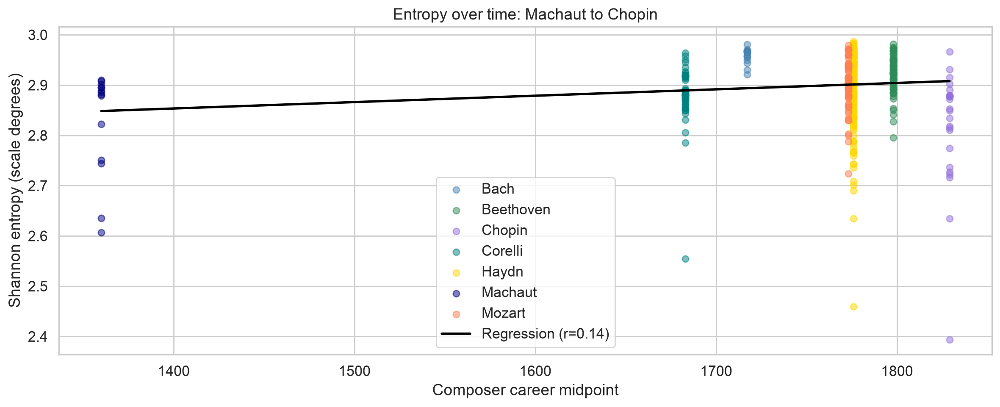
Reading the regression: what these numbers mean for this corpus#
A positive slope here means scale-degree entropy crept upward, in bits per year, as you move from Machaut through Chopin; a negative slope means it crept downward.
The size of r tells you how tightly year and entropy track together across these composers.
Closer to 0means knowing the year barely predicts entropy, closer to +-1 means they move together closely.
r² turns that into a share of the variance: how much of the piece-to-piece spread in entropy this single linear trend with year actually accounts for, leaving the rest to composer, genre, and chance.
The p-value tells you how surprising this slope would be if year and entropy were really unrelated – a small p means the trend is unlikely to be a fluke of this particular sample.
Discussion#
Part 4: TF-IDF – What’s Distinctive, Not Just Frequent#
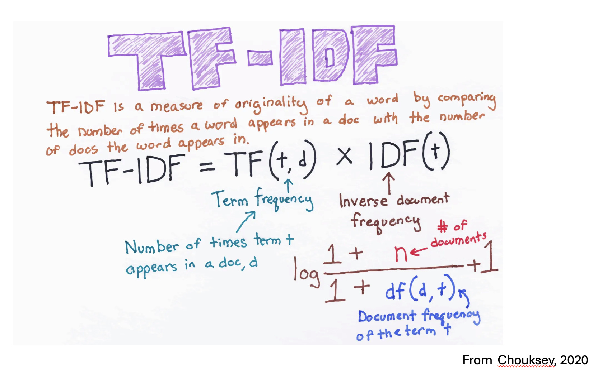
Shannon entropy tells you how unpredictable a corpus is internally. It does NOT tell you what’s distinctive about that corpus compared to others.
Two corpora can have identical entropy but completely different melodic fingerprints. Entropy is a summary statistic; TF-IDF is a fingerprint.
TF (Term Frequency): how often does this n-gram appear in this corpus?
IDF (Inverse Document Frequency): how rare is this n-gram across ALL corpora?
TF-IDF = TF x IDF: high when common in this corpus but rare elsewhere – distinctive.
As a way of illustrating, we get one result with raw counts of Taylor Swift lyrics:
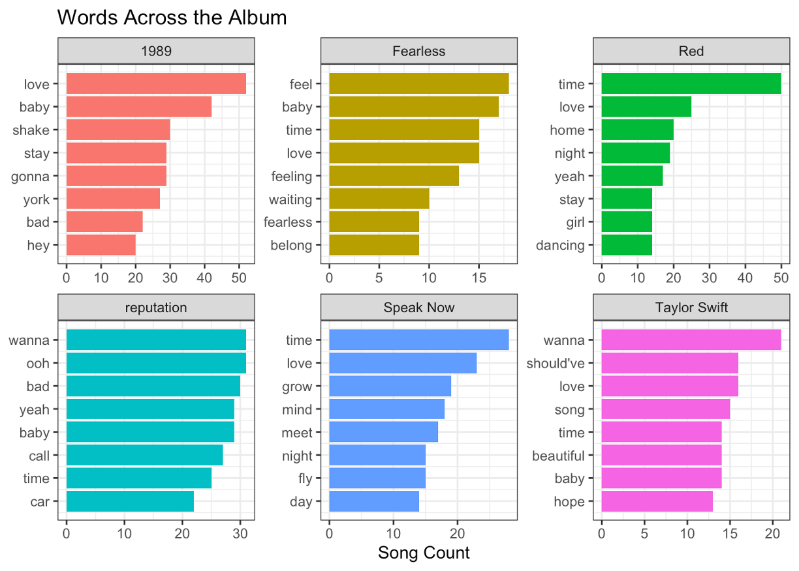
And another, perhaps more useful result, with TF-IDF:
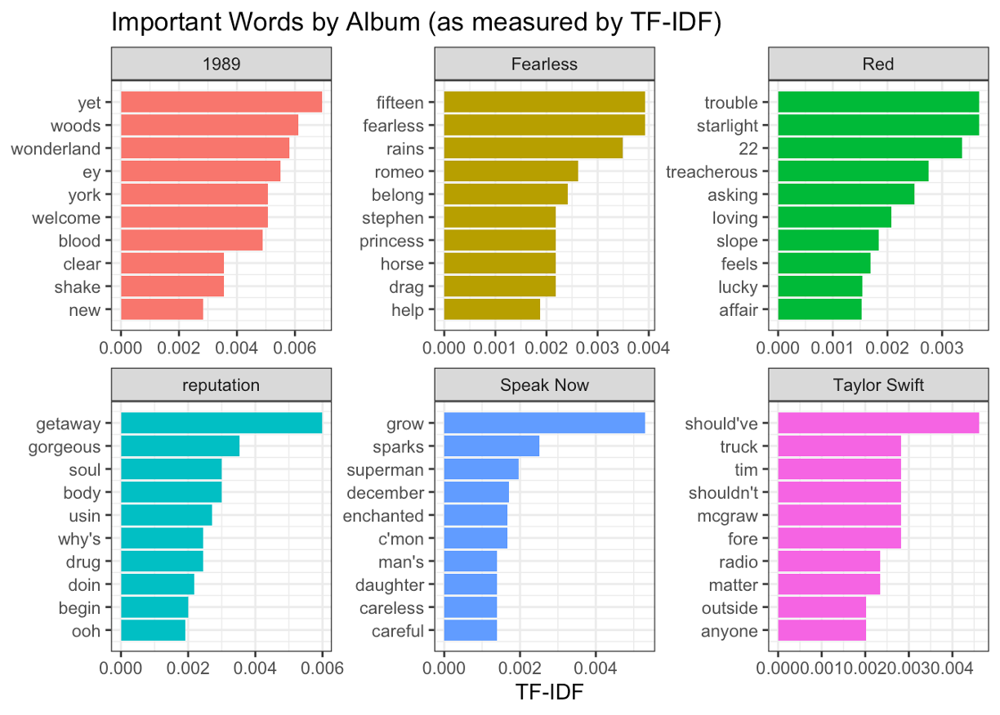
TF-IDF for Harmonic Progressions#
Imagine three corpora: Bach chorales, Beethoven quartets, Chopin mazurkas.
I→V appears in all three – high TF in each, but IDF is near zero (it appears everywhere). TF-IDF ≈ 0. Common but not distinctive.
I→♭VII appears frequently in Beethoven but rarely in Bach or Chopin. High TF for Beethoven, high IDF. TF-IDF is high. A Beethoven fingerprint.
I→♭II (the Neapolitan) appears in Chopin mazurkas more than anywhere else. TF-IDF is highest for Chopin. This matches what music theorists already know – Chopin loves the Neapolitan.
The test: does TF-IDF find things music theorists already know? If yes, we can trust it for things they don’t know yet.
Let’s try this with some Bach chorales.
# Simple two-corpus distinctiveness: what does Parker play that Dizzy doesn't?
# This is the lighter version of TF-IDF students can see the logic clearly
from utils import extract_scale_degree_bigrams, distinctive_ngrams
parker_files = sorted(glob.glob('../data/charlie_parker_no_chords/*.krn'))
dizzy_files = sorted(glob.glob('../data/dizzy_gillespie_no_chords/*.krn'))
parker_counter, _ = extract_scale_degree_bigrams(parker_files, 'Parker')
dizzy_counter, _ = extract_scale_degree_bigrams(dizzy_files, 'Dizzy')
parker_dist, dizzy_dist = distinctive_ngrams(
parker_counter, dizzy_counter,
name_a='Parker', name_b='Dizzy', top_n=10)
print('Most distinctive to Charlie Parker:')
display(parker_dist)
print('Most distinctive to Dizzy Gillespie:')
display(dizzy_dist)
Most distinctive to Parker:
ngram freq_a freq_b distinctiveness
(6, 4) 0.007329 0.001669 0.814529
(b6, 4) 0.007251 0.002276 0.761105
(3, b2) 0.001891 0.000607 0.757086
(#4, b3) 0.002680 0.000910 0.746420
(3, #4) 0.002404 0.000910 0.725314
(b6, 7) 0.001970 0.000759 0.722009
(b7, #4) 0.002640 0.001062 0.713132
(2, 3) 0.013753 0.005917 0.699175
(1, 6) 0.018205 0.007890 0.697661
(#4, 2) 0.002798 0.001214 0.697432
Most distinctive to Dizzy:
ngram freq_a freq_b distinctiveness
(7, 4) 0.000276 0.001821 0.868428
(#4, b7) 0.000355 0.002124 0.856924
(7, b3) 0.000552 0.002579 0.823798
(b3, b2) 0.002167 0.010014 0.822074
(b7, 4) 0.001143 0.005007 0.814172
(b7, b3) 0.000906 0.003945 0.813170
(b2, 7) 0.002837 0.011531 0.802534
(b2, 4) 0.000906 0.003641 0.800704
(b2, b6) 0.000236 0.000910 0.793825
(b3, 4) 0.004768 0.016689 0.777789
Most distinctive to Charlie Parker:
| ngram | freq_a | freq_b | distinctiveness | |
|---|---|---|---|---|
| 0 | (6, 4) | 0.007329 | 0.001669 | 0.814529 |
| 1 | (b6, 4) | 0.007251 | 0.002276 | 0.761105 |
| 2 | (3, b2) | 0.001891 | 0.000607 | 0.757086 |
| 3 | (#4, b3) | 0.002680 | 0.000910 | 0.746420 |
| 4 | (3, #4) | 0.002404 | 0.000910 | 0.725314 |
| 5 | (b6, 7) | 0.001970 | 0.000759 | 0.722009 |
| 6 | (b7, #4) | 0.002640 | 0.001062 | 0.713132 |
| 7 | (2, 3) | 0.013753 | 0.005917 | 0.699175 |
| 8 | (1, 6) | 0.018205 | 0.007890 | 0.697661 |
| 9 | (#4, 2) | 0.002798 | 0.001214 | 0.697432 |
Most distinctive to Dizzy Gillespie:
| ngram | freq_a | freq_b | distinctiveness | |
|---|---|---|---|---|
| 0 | (7, 4) | 0.000276 | 0.001821 | 0.868428 |
| 1 | (#4, b7) | 0.000355 | 0.002124 | 0.856924 |
| 2 | (7, b3) | 0.000552 | 0.002579 | 0.823798 |
| 3 | (b3, b2) | 0.002167 | 0.010014 | 0.822074 |
| 4 | (b7, 4) | 0.001143 | 0.005007 | 0.814172 |
| 5 | (b7, b3) | 0.000906 | 0.003945 | 0.813170 |
| 6 | (b2, 7) | 0.002837 | 0.011531 | 0.802534 |
| 7 | (b2, 4) | 0.000906 | 0.003641 | 0.800704 |
| 8 | (b2, b6) | 0.000236 | 0.000910 | 0.793825 |
| 9 | (b3, 4) | 0.004768 | 0.016689 | 0.777789 |
Reading the distinctiveness table#
Each row shows a scale-degree bigram and how much more common it is in one corpus than the other. A score near 1.0 means the bigram almost exclusively appears in that corpus. Near 0.5 means equal frequency in both.
Do these results map onto what you might expect?
# quick note about glob: Deutschl is organized into sub-collections rather than one flat
# folder (see Exercise 2A), so its file list needs a recursive glob.
# It's also super slow becuase the corpus is so biased in that direction.
# If we want to be quicker we should just avoid that line.
from utils import tf_idf_ngrams
essen_tfidf = tf_idf_ngrams({
'England': sorted(glob.glob('../data/Essen/England/*.krn')),
'Polska': sorted(glob.glob('../data/Essen/Polska/*.krn')),
'Rossiya': sorted(glob.glob('../data/Essen/Rossiya/*.krn')),
'Deutschl': sorted(glob.glob('../data/Essen/Deutschl/**/*.krn', recursive=True)),
}, n=2, top_n=10, representation='scale_degree',
plot=True, verbose=False)
essen_tfidf.head(20)
{kind=link}
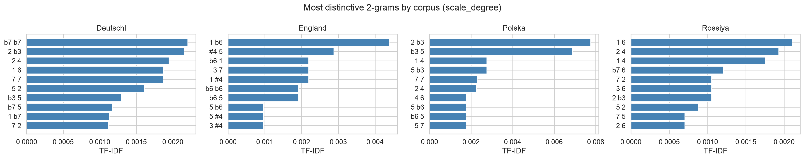
| corpus | ngram | tf | idf | tfidf | |
|---|---|---|---|---|---|
| 0 | Deutschl | (b7, b7) | 0.002405 | 0.916291 | 0.002204 |
| 1 | Deutschl | (2, b3) | 0.009644 | 0.223144 | 0.002152 |
| 2 | Deutschl | (2, 4) | 0.008718 | 0.223144 | 0.001945 |
| 3 | Deutschl | (1, 6) | 0.008383 | 0.223144 | 0.001871 |
| 4 | Deutschl | (7, 7) | 0.003650 | 0.510826 | 0.001865 |
| 5 | Deutschl | (5, 2) | 0.007208 | 0.223144 | 0.001608 |
| 6 | Deutschl | (b3, 5) | 0.002532 | 0.510826 | 0.001294 |
| 7 | Deutschl | (b7, 5) | 0.002289 | 0.510826 | 0.001170 |
| 8 | Deutschl | (1, b7) | 0.005057 | 0.223144 | 0.001128 |
| 9 | Deutschl | (7, 2) | 0.005011 | 0.223144 | 0.001118 |
| 10 | Deutschl | (4, 6) | 0.004517 | 0.223144 | 0.001008 |
| 11 | Deutschl | (b7, b3) | 0.001873 | 0.510826 | 0.000957 |
| 12 | Deutschl | (5, b7) | 0.001823 | 0.510826 | 0.000931 |
| 13 | Deutschl | (1, 4) | 0.004116 | 0.223144 | 0.000919 |
| 14 | Deutschl | (5, 7) | 0.004028 | 0.223144 | 0.000899 |
| 15 | Deutschl | (b7, b6) | 0.001750 | 0.510826 | 0.000894 |
| 16 | Deutschl | (7, 5) | 0.003997 | 0.223144 | 0.000892 |
| 17 | Deutschl | (6, b7) | 0.000964 | 0.916291 | 0.000883 |
| 18 | Deutschl | (b7, 6) | 0.001661 | 0.510826 | 0.000849 |
| 19 | Deutschl | (b6, 5) | 0.003781 | 0.223144 | 0.000844 |
# Heatmap view: which patterns belong to which tradition at a glance
from utils import plot_tfidf_heatmap
plot_tfidf_heatmap(essen_tfidf, top_n=20)
{kind=link}
Exercise: TF-IDF as Stylistic Argument#
Run tf_idf_ngrams on three Essen regions you haven’t analyzed yet
(change the CHANGEME markers below).
Find the single highest TF-IDF bigram for each region. Look at the actual scale degrees – what two scale degrees does it connect? Is that a musically meaningful transition for that tradition?
# Change the three CHANGEME paths to Essen regions you haven't tried yet
# Available: Sverige, Italia, France, Magyar, Ukraina, Oesterrh, etc.
your_tfidf = tf_idf_ngrams({
'CHANGEME1': sorted(glob.glob('../data/Essen/CHANGEME1/*.krn')),
'CHANGEME2': sorted(glob.glob('../data/Essen/CHANGEME2/*.krn')),
'CHANGEME3': sorted(glob.glob('../data/Essen/CHANGEME3/*.krn')),
}, n=2, top_n=5, representation='scale_degree',
plot=True, verbose=False)
for corpus in your_tfidf['corpus'].unique():
top_row = your_tfidf[your_tfidf['corpus'] == corpus].iloc[0]
print(f'{corpus}: top bigram = {top_row["ngram"]}, TF-IDF = {top_row["tfidf"]:.4f}')
Discussion!#
What were your results?
Are there any interesting points about it?
TF-IDF on Harmonic Progressions#
So far we have applied TF-IDF to melodic n-grams – sequences of scale degrees or intervals. The same logic applies to harmony: what chord progressions are distinctive to one composer compared to others?
We use music21’s chordify() to reduce each kern file to a
sequence of vertical sonorities, then extract Roman numeral
labels relative to the detected key. The resulting bigrams
(pairs of Roman numerals) can be compared with the same
distinctive_ngrams and tf_idf framework we already used for melody.
# Extract Roman numeral bigrams from kern files via music21 chordify
# Each file is chordified, analyzed for key, and converted to RN sequence
from music21 import converter, roman
from collections import Counter
import glob
def extract_roman_numeral_bigrams(kern_dir, composer_name, verbose=True):
"""
Chordify all kern files in a directory and extract Roman numeral bigrams.
Uses music21's chordify() to reduce each score to vertical sonorities,
detects the key, then maps each chord to a Roman numeral label.
Bigrams are pairs of consecutive Roman numeral labels.
Parameters:
kern_dir : str
Path to directory containing .krn files. Searches recursively.
composer_name : str
Label used in progress messages.
verbose : bool
Print progress every 10 files.
Returns a counter of of (RN1, RN2) tuples.
Usage
-----
bach_harm = extract_roman_numeral_bigrams(
'../data/humdrum_scores/Bach/ArtFugue', 'Bach')
"""
files = sorted(glob.glob(f'{kern_dir}/**/*.krn', recursive=True))
if not files:
files = sorted(glob.glob(f'{kern_dir}/*.krn'))
if not files:
print(f'No kern files found in {kern_dir}')
return Counter()
all_bigrams = []
skipped = 0
for i, f in enumerate(files):
if verbose and i % 10 == 0:
print(f' {composer_name}: {i+1}/{len(files)}...')
try:
score = converter.parse(f)
k = score.analyze('key')
chordified = score.chordify()
rn_seq = []
for ch in chordified.recurse().getElementsByClass('Chord'):
try:
rn = roman.romanNumeralFromChord(ch, k)
rn_seq.append(rn.romanNumeral)
except Exception:
continue
all_bigrams.extend(zip(rn_seq, rn_seq[1:]))
except Exception:
skipped += 1
continue
if verbose:
print(f' {composer_name}: done -- '
f'{len(files) - skipped} files, '
f'{len(all_bigrams)} bigrams, '
f'{skipped} skipped\n')
return Counter(all_bigrams)
# Extract Roman numeral bigrams for Bach, Mozart, Beethoven, Chopin
# Uses the same corpus paths as the diachronic analysis above
# Warning: chordify is slow -- this cell may take 3-5 minutes
print('Extracting harmonic bigrams via chordify...')
print('This may take a few minutes.\n')
bach_harm = extract_roman_numeral_bigrams(
'../data/humdrum_scores/Bach/ArtFugue', 'Bach')
mozart_harm = extract_roman_numeral_bigrams(
'../data/humdrum_scores/Mozart/Quartets.Str', 'Mozart')
beethoven_harm = extract_roman_numeral_bigrams(
'../data/humdrum_scores/Beethoven/Quartets.Str', 'Beethoven')
chopin_harm = extract_roman_numeral_bigrams(
'../data/humdrum_scores/Chopin/Preludes', 'Chopin')
# Show most common progressions overall
combined = bach_harm + mozart_harm + beethoven_harm + chopin_harm
print('Top 10 Roman numeral bigrams across all four composers:')
for bigram, count in combined.most_common(10):
print(f' {bigram[0]}->{bigram[1]}: {count}')
Extracting harmonic bigrams via chordify...
This may take a few minutes.
Bach: 1/16...
Bach: 11/16...
Bach: done -- 15 files, 12573 bigrams, 1 skipped
Mozart: 1/64...
Mozart: 11/64...
Mozart: 21/64...
Mozart: 31/64...
Mozart: 41/64...
Mozart: 51/64...
Mozart: 61/64...
Mozart: done -- 64 files, 39472 bigrams, 0 skipped
Beethoven: 1/58...
Beethoven: 11/58...
Beethoven: 21/58...
Beethoven: 31/58...
Beethoven: 41/58...
Beethoven: 51/58...
Beethoven: done -- 58 files, 81957 bigrams, 0 skipped
Chopin: 1/24...
Chopin: 11/24...
Chopin: 21/24...
Chopin: done -- 24 files, 8962 bigrams, 0 skipped
Top 10 Roman numeral bigrams across all four composers:
I->I: 6993
V->V: 6186
i->i: 4537
v->v: 3731
ii->ii: 3104
vi->vi: 2134
IV->IV: 2055
iii->iii: 2009
V->I: 1986
iv->iv: 1967
What to expect#
The most common bigrams across all composers will almost certainly be I->I (tonic repeating), I->V, and V->I. These will have low TF-IDF scores because they appear in every composer’s output. They are common, but not distinctive.
For the distinctive score, it’s just whether or not it ever appears in the other corpus. So every Bach progression that never appears in Chopin gets a distinctiveness score of exactly 1.0, and vice versa (just a quick proxy).
# Two-corpus distinctiveness: what harmonic moves separate Bach from Chopin?
# Same function as Parker vs Dizzy, now applied to Roman numeral bigrams
from utils import distinctive_ngrams
print('=== Bach vs Chopin: distinctive harmonic progressions ===\n')
bach_dist, chopin_dist = distinctive_ngrams(
bach_harm, chopin_harm,
name_a='Bach', name_b='Chopin', top_n=10)
print('Most distinctive to Bach:')
display(bach_dist)
print()
print('Most distinctive to Chopin:')
display(chopin_dist)
=== Bach vs Chopin: distinctive harmonic progressions ===
Most distinctive to Bach:
ngram freq_a freq_b distinctiveness
(VI, VII) 0.002625 0.0 1.0
(VII, #iii) 0.002386 0.0 1.0
(#iii, I) 0.002227 0.0 1.0
(III, IV) 0.001909 0.0 1.0
(IV, #vii) 0.001670 0.0 1.0
(IV, VII) 0.001511 0.0 1.0
(II, VII) 0.001352 0.0 1.0
(VII, I) 0.001352 0.0 1.0
(VII, iv) 0.001273 0.0 1.0
(bii, VI) 0.001113 0.0 1.0
Most distinctive to Chopin:
ngram freq_a freq_b distinctiveness
(bi, bi) 0.0 0.004575 1.0
(biv, biv) 0.0 0.004575 1.0
(bbvi, bbvi) 0.0 0.004352 1.0
(I, vi) 0.0 0.003794 1.0
(bbII, bbII) 0.0 0.003236 1.0
(#V, #V) 0.0 0.003124 1.0
(bbVI, bbVI) 0.0 0.002566 1.0
(bbII, biv) 0.0 0.002232 1.0
(vi, #iv) 0.0 0.002120 1.0
(bIII, bIII) 0.0 0.002120 1.0
Most distinctive to Bach:
Most distinctive to Chopin:
| ngram | freq_a | freq_b | distinctiveness | |
|---|---|---|---|---|
| 0 | (VI, VII) | 0.002625 | 0.0 | 1.0 |
| 1 | (VII, #iii) | 0.002386 | 0.0 | 1.0 |
| 2 | (#iii, I) | 0.002227 | 0.0 | 1.0 |
| 3 | (III, IV) | 0.001909 | 0.0 | 1.0 |
| 4 | (IV, #vii) | 0.001670 | 0.0 | 1.0 |
| 5 | (IV, VII) | 0.001511 | 0.0 | 1.0 |
| 6 | (II, VII) | 0.001352 | 0.0 | 1.0 |
| 7 | (VII, I) | 0.001352 | 0.0 | 1.0 |
| 8 | (VII, iv) | 0.001273 | 0.0 | 1.0 |
| 9 | (bii, VI) | 0.001113 | 0.0 | 1.0 |
| ngram | freq_a | freq_b | distinctiveness | |
|---|---|---|---|---|
| 0 | (bi, bi) | 0.0 | 0.004575 | 1.0 |
| 1 | (biv, biv) | 0.0 | 0.004575 | 1.0 |
| 2 | (bbvi, bbvi) | 0.0 | 0.004352 | 1.0 |
| 3 | (I, vi) | 0.0 | 0.003794 | 1.0 |
| 4 | (bbII, bbII) | 0.0 | 0.003236 | 1.0 |
| 5 | (#V, #V) | 0.0 | 0.003124 | 1.0 |
| 6 | (bbVI, bbVI) | 0.0 | 0.002566 | 1.0 |
| 7 | (bbII, biv) | 0.0 | 0.002232 | 1.0 |
| 8 | (vi, #iv) | 0.0 | 0.002120 | 1.0 |
| 9 | (bIII, bIII) | 0.0 | 0.002120 | 1.0 |
# Mozart vs Beethoven: contemporaries with different harmonic languages
print('=== Mozart vs Beethoven: distinctive harmonic progressions ===\n')
mozart_dist, beeth_dist = distinctive_ngrams(
mozart_harm, beethoven_harm,
name_a='Mozart', name_b='Beethoven', top_n=10)
print('Most distinctive to Mozart:')
display(mozart_dist)
print()
print('Most distinctive to Beethoven:')
display(beeth_dist)
=== Mozart vs Beethoven: distinctive harmonic progressions ===
Most distinctive to Mozart:
ngram freq_a freq_b distinctiveness
(biii, Ger) 0.000076 0.0 0.999999
(bV, VI) 0.000076 0.0 0.999999
(#vi, bv) 0.000076 0.0 0.999999
(vi, Ger) 0.000051 0.0 0.999998
(Ger, bVI) 0.000051 0.0 0.999998
(bVI, Fr) 0.000051 0.0 0.999998
(#vii, It) 0.000051 0.0 0.999998
(Ger, biii) 0.000051 0.0 0.999998
(VI, bV) 0.000051 0.0 0.999998
(bv, #vi) 0.000051 0.0 0.999998
Most distinctive to Beethoven:
ngram freq_a freq_b distinctiveness
(bbII, bbII) 0.0 0.000842 1.0
(#iii, ii) 0.0 0.000573 1.0
(bIV, bIV) 0.0 0.000390 1.0
(#V, #V) 0.0 0.000342 1.0
(bv, bv) 0.0 0.000329 1.0
(#iii, V) 0.0 0.000293 1.0
(bVI, biii) 0.0 0.000281 1.0
(IV, #iii) 0.0 0.000244 1.0
(bII, bvii) 0.0 0.000244 1.0
(#ii, #iv) 0.0 0.000232 1.0
Most distinctive to Mozart:
Most distinctive to Beethoven:
| ngram | freq_a | freq_b | distinctiveness | |
|---|---|---|---|---|
| 0 | (biii, Ger) | 0.000076 | 0.0 | 0.999999 |
| 1 | (bV, VI) | 0.000076 | 0.0 | 0.999999 |
| 2 | (#vi, bv) | 0.000076 | 0.0 | 0.999999 |
| 3 | (vi, Ger) | 0.000051 | 0.0 | 0.999998 |
| 4 | (Ger, bVI) | 0.000051 | 0.0 | 0.999998 |
| 5 | (bVI, Fr) | 0.000051 | 0.0 | 0.999998 |
| 6 | (#vii, It) | 0.000051 | 0.0 | 0.999998 |
| 7 | (Ger, biii) | 0.000051 | 0.0 | 0.999998 |
| 8 | (VI, bV) | 0.000051 | 0.0 | 0.999998 |
| 9 | (bv, #vi) | 0.000051 | 0.0 | 0.999998 |
| ngram | freq_a | freq_b | distinctiveness | |
|---|---|---|---|---|
| 0 | (bbII, bbII) | 0.0 | 0.000842 | 1.0 |
| 1 | (#iii, ii) | 0.0 | 0.000573 | 1.0 |
| 2 | (bIV, bIV) | 0.0 | 0.000390 | 1.0 |
| 3 | (#V, #V) | 0.0 | 0.000342 | 1.0 |
| 4 | (bv, bv) | 0.0 | 0.000329 | 1.0 |
| 5 | (#iii, V) | 0.0 | 0.000293 | 1.0 |
| 6 | (bVI, biii) | 0.0 | 0.000281 | 1.0 |
| 7 | (IV, #iii) | 0.0 | 0.000244 | 1.0 |
| 8 | (bII, bvii) | 0.0 | 0.000244 | 1.0 |
| 9 | (#ii, #iv) | 0.0 | 0.000232 | 1.0 |
composer_counters = {
'Bach': bach_harm,
'Mozart': mozart_harm,
'Beethoven': beethoven_harm,
'Chopin': chopin_harm,
}
n_corp = len(composer_counters)
rows = []
all_bigrams = set()
for c in composer_counters.values():
all_bigrams.update(c.keys())
for corpus_name, counter in composer_counters.items():
total = sum(counter.values())
for bigram in all_bigrams:
tf = counter.get(bigram, 0) / total if total else 0
df = sum(1 for c in composer_counters.values() if bigram in c)
# No +1 at end — universal terms now get IDF=0
idf = np.log((n_corp + 1) / (df + 1))
tfidf = tf * idf
if tfidf > 0:
rows.append({
'corpus': corpus_name,
'progression': f'{bigram[0]}→{bigram[1]}',
'tf': round(tf, 6),
'idf': round(idf, 3),
'tfidf': round(tfidf, 6),
})
harmonic_tfidf = pd.DataFrame(rows).sort_values('tfidf', ascending=False)
# Spot check
print('i→i IDF should now be 0:')
ii = harmonic_tfidf[harmonic_tfidf.progression == 'i→i']
display(ii[['corpus','tf','idf','tfidf']])
print('\nTop distinctive progressions per composer:')
for corpus in composer_counters:
top = (harmonic_tfidf[harmonic_tfidf.corpus == corpus]
.head(5))
print(f'\n{corpus}:')
display(top[['progression','tf','idf','tfidf']].reset_index(drop=True))
i→i IDF should now be 0:
Top distinctive progressions per composer:
Bach:
Mozart:
Beethoven:
Chopin:
| corpus | tf | idf | tfidf |
|---|
| progression | tf | idf | tfidf | |
|---|---|---|---|---|
| 0 | VI→VII | 0.002625 | 0.223 | 0.000586 |
| 1 | VII→#iii | 0.002386 | 0.223 | 0.000532 |
| 2 | #iii→I | 0.002227 | 0.223 | 0.000497 |
| 3 | I→bII | 0.000875 | 0.511 | 0.000447 |
| 4 | III→IV | 0.001909 | 0.223 | 0.000426 |
| progression | tf | idf | tfidf | |
|---|---|---|---|---|
| 0 | V→vi | 0.007676 | 0.223 | 0.001713 |
| 1 | I→vi | 0.006080 | 0.223 | 0.001357 |
| 2 | iii→V | 0.005219 | 0.223 | 0.001165 |
| 3 | IV→vi | 0.003496 | 0.223 | 0.000780 |
| 4 | V→#iv | 0.003065 | 0.223 | 0.000684 |
| progression | tf | idf | tfidf | |
|---|---|---|---|---|
| 0 | I→vi | 0.005295 | 0.223 | 0.001182 |
| 1 | V→vi | 0.005039 | 0.223 | 0.001124 |
| 2 | iii→V | 0.004027 | 0.223 | 0.000898 |
| 3 | bVII→bVII | 0.003782 | 0.223 | 0.000844 |
| 4 | IV→vi | 0.003526 | 0.223 | 0.000787 |
| progression | tf | idf | tfidf | |
|---|---|---|---|---|
| 0 | bi→bi | 0.004575 | 0.511 | 0.002337 |
| 1 | biv→biv | 0.004575 | 0.511 | 0.002337 |
| 2 | bbvi→bbvi | 0.004352 | 0.511 | 0.002223 |
| 3 | bbII→bbII | 0.003236 | 0.511 | 0.001653 |
| 4 | #V→#V | 0.003124 | 0.511 | 0.001596 |
What the TF-IDF results tell us#
Bach: VI→VII, VII→#iii, I→♭II The chains of thirds and the approach to the Neapolitan (I→♭II) reflect the chromatic voice-leading of the Art of Fugue. These are contrapuntal progressions — they arise from independent melodic lines converging, not from functional harmonic planning in the Classical sense. A music theorist would recognize these immediately as characteristic of late-Baroque style.
Mozart: V→vi, I→vi, iii→V The deceptive cadence (V→vi) as Mozart’s most distinctive progression is exactly what music theory textbooks say about Classical style — the deceptive cadence extends phrases rather than closing them, creating forward momentum. I→vi (moving to the submediant) and the approach to V through iii are equally characteristic of Haydn-era voice leading.
Chopin: ♭iv→♭iv, ♭i→♭i, ♭♭vi→♭♭vi, ♭♭II→♭♭II This is the most striking result. Chopin’s distinctive progressions are almost entirely chromatic chords repeating — ♭iv staying on ♭iv, ♭i staying on ♭i. This reflects Chopin’s harmonic language in the Preludes: extended
# Heatmap: all four composers x top distinctive progressions at a glance
from utils import plot_tfidf_heatmap
plot_tfidf_heatmap(harmonic_tfidf, top_n=30);
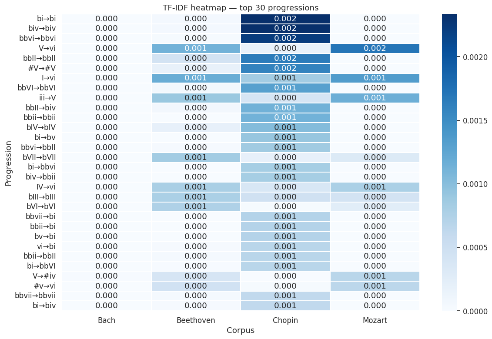
<Figure size 1200x800 with 2 Axes>
Part 5: Bach Chorales – Harmonic Entropy and Correlation#
Everything so far has measured MELODIC entropy. But a chorale is also a harmonic object – a sequence of chords. Does a chorale with unpredictable melodic motion also have unpredictable harmony? Or are the two independent?
We will build a harmonic entropy measure from scratch (Roman numeral unigram entropy per chorale), then correlate it against the melodic entropy we already know how to compute.
NOTE: the Bach chorales in this repo live across three overlapping
folders (371chorales/, chorales.all/, chorales.sample/) that are
mostly the same ~370 chorales under different filenames. We use
371chorales/ throughout this section – it is the canonical,
non-duplicated set.
import music21
from music21 import converter, roman
def harmonic_entropy_single(kern_path, verbose=False):
'''Return (tune_id, harmonic_entropy, n_chords) for one chorale,
using Roman-numeral unigram entropy as the harmonic complexity measure.'''
score = converter.parse(kern_path)
key = score.analyze('key')
chordified = score.chordify()
numerals = []
for ch in chordified.recurse().getElementsByClass('Chord'):
try:
rn = roman.romanNumeralFromChord(ch, key)
numerals.append(rn.romanNumeral)
except Exception:
continue
if not numerals:
return None
counts = pd.Series(numerals).value_counts(normalize=True)
h = -np.sum(counts * np.log2(counts))
if verbose:
print(f'{kern_path}: key={key}, n_chords={len(numerals)}, H={h:.3f}')
tune_id = Path(kern_path).stem
return {'tune_id': tune_id, 'harmonic_entropy': h, 'n_chords': len(numerals)}
# Chordify + key analysis is slow, so this loop runs on a 60-chorale subset.
# You can change it if you'd like.
chorale_files = sorted(glob.glob('../data/humdrum_scores/Bach/Chorales/371chorales/*.krn'))[:60]
harmonic_rows = []
for f in chorale_files:
result = harmonic_entropy_single(f, verbose=False)
if result is not None:
harmonic_rows.append(result)
harmonic_df = pd.DataFrame(harmonic_rows)
print(f'Computed harmonic entropy for {len(harmonic_df)} chorales.')
harmonic_df.head(10)
Computed harmonic entropy for 60 chorales.
| tune_id | harmonic_entropy | n_chords | |
|---|---|---|---|
| 0 | chor001 | 2.564230 | 80 |
| 1 | chor002 | 3.297537 | 79 |
| 2 | chor003 | 3.222355 | 64 |
| 3 | chor004 | 3.156555 | 61 |
| 4 | chor005 | 3.345039 | 123 |
| 5 | chor006 | 2.785898 | 41 |
| 6 | chor007 | 3.376848 | 111 |
| 7 | chor008 | 3.350235 | 124 |
| 8 | chor009 | 3.543757 | 87 |
| 9 | chor010 | 3.152478 | 56 |
# Now compute melodic entropy for the same chorales
# (corpus_entropy_profile() takes a directory or single file.
# so we point it at the whole 371chorales folder and let the merge below
# narrow it down to just the chorales we computed harmonic entropy for)
from utils import corpus_entropy_profile
melodic_df = corpus_entropy_profile(
'../data/humdrum_scores/Bach/Chorales/371chorales',
representation='scale_degree',
verbose=False, plot=False)
melodic_df = melodic_df.rename(columns={'entropy': 'melodic_entropy'})
##merge with the ones we have harmonic entropy for...
merged = harmonic_df.merge(melodic_df[['tune_id', 'melodic_entropy', 'n_notes']],
on='tune_id', how='inner')
## print results
print(f'Chorales with both harmonic and melodic entropy: {len(merged)}')
merged.head(20)
370 piece(s) — entropy (scale_degree): mean=2.887, median=2.895, min=2.724, max=2.964
Chorales with both harmonic and melodic entropy: 60
| tune_id | harmonic_entropy | n_chords | melodic_entropy | n_notes | |
|---|---|---|---|---|---|
| 0 | chor001 | 2.564230 | 80 | 2.751188 | 229 |
| 1 | chor002 | 3.297537 | 79 | 2.921377 | 231 |
| 2 | chor003 | 3.222355 | 64 | 2.824696 | 196 |
| 3 | chor004 | 3.156555 | 61 | 2.872681 | 186 |
| 4 | chor005 | 3.345039 | 123 | 2.904893 | 333 |
| 5 | chor006 | 2.785898 | 41 | 2.804092 | 125 |
| 6 | chor007 | 3.376848 | 111 | 2.916162 | 346 |
| 7 | chor008 | 3.350235 | 124 | 2.918357 | 358 |
| 8 | chor009 | 3.543757 | 87 | 2.948614 | 243 |
| 9 | chor010 | 3.152478 | 56 | 2.925384 | 182 |
| 10 | chor011 | 3.321569 | 139 | 2.927119 | 418 |
| 11 | chor012 | 3.387486 | 43 | 2.941844 | 148 |
| 12 | chor013 | 3.456656 | 108 | 2.915160 | 304 |
| 13 | chor014 | 3.007344 | 78 | 2.863354 | 238 |
| 14 | chor015 | 3.545739 | 85 | 2.909060 | 239 |
| 15 | chor016 | 3.537055 | 97 | 2.951084 | 298 |
| 16 | chor017 | 3.192375 | 57 | 2.873851 | 176 |
| 17 | chor018 | 2.930885 | 70 | 2.882737 | 201 |
| 18 | chor019 | 3.528920 | 67 | 2.907135 | 183 |
| 19 | chor020 | 3.323763 | 80 | 2.887592 | 236 |
# Pearson correlation: do harmonic and melodic entropy move together?
from scipy.stats import pearsonr
r, p = pearsonr(merged['harmonic_entropy'], merged['melodic_entropy'])
print(f'Pearson r = {r:.3f}, p = {p:.4f}')
fig, ax = plt.subplots(figsize=(7, 5))
ax.scatter(merged['harmonic_entropy'], merged['melodic_entropy'],
alpha=0.6, color='steelblue')
slope_h, intercept_h = np.polyfit(merged['harmonic_entropy'],
merged['melodic_entropy'], 1)
x_range = np.linspace(merged['harmonic_entropy'].min(),
merged['harmonic_entropy'].max(), 100)
ax.plot(x_range, slope_h * x_range + intercept_h, color='coral', linewidth=2)
ax.set_xlabel('Harmonic entropy (Roman numeral unigrams)')
ax.set_ylabel('Melodic entropy (scale degrees)')
ax.set_title(f'Harmonic vs melodic entropy in Bach chorales (r={r:.2f})')
plt.tight_layout()
plt.show()
Pearson r = 0.730, p = 0.0000
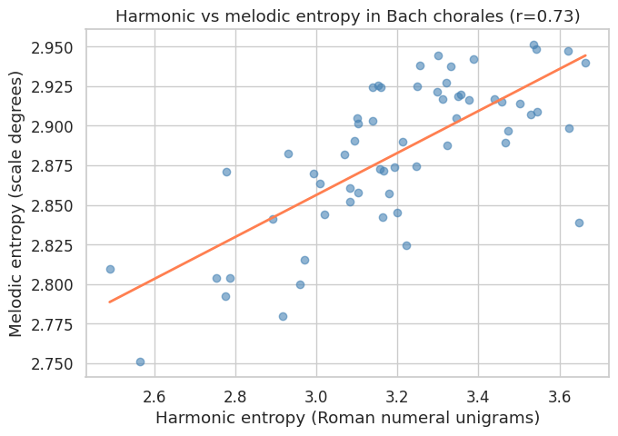
What this correlation means#
A positive r here means chorales with more harmonically varied
progressions also tend to have more melodically variability.
Bach’s harmonic and melodic choices move together rather than independently.
It makes sense and isn’t too interesting!
An r near zero would say the two are essentially unrelated: a chorale can be harmonically adventurous with a plain tune, or the reverse, with no consistent pattern either way.
# Multiple regression: can we predict harmonic entropy from melodic features?
# If yes, melodic complexity is a proxy for harmonic complexity in Bach
from sklearn.linear_model import LinearRegression
from sklearn.preprocessing import StandardScaler
X_cols = ['melodic_entropy', 'n_notes']
X = merged[X_cols].values
y = merged['harmonic_entropy'].values # ← predicting THIS
X_scaled = StandardScaler().fit_transform(X)
model = LinearRegression().fit(X_scaled, y)
r2 = model.score(X_scaled, y)
print(f'R² = {r2:.3f} ({r2*100:.1f}% of variance in harmonic entropy explained)\n')
coef_df = pd.DataFrame({
'Feature': X_cols,
'β (standardized)': model.coef_,
'Hypothesis': [
'More melodic complexity → more harmonic complexity?',
'Longer piece → more harmonic variety?',
]
}).sort_values('β (standardized)', key=abs, ascending=False)
display(coef_df.round(3))
print()
print('Key question: after controlling for piece length (n_notes),')
print('does melodic entropy still predict harmonic entropy?')
print('If yes: Bach couples melodic and harmonic complexity.')
print('If no: the Pearson correlation was driven by length alone.')
R² = 0.544 (54.4% of variance in harmonic entropy explained)
Key question: after controlling for piece length (n_notes),
does melodic entropy still predict harmonic entropy?
If yes: Bach couples melodic and harmonic complexity.
If no: the Pearson correlation was driven by length alone.
| Feature | β (standardized) | Hypothesis | |
|---|---|---|---|
| 0 | melodic_entropy | 0.177 | More melodic complexity → more harmonic complexity? |
| 1 | n_notes | 0.030 | Longer piece → more harmonic variety? |
Reading the multiple regression#
R² = 0.544 — the two predictors together explain 54% of the variance in harmonic entropy across the Bach chorales. That’s a substantial amount for a model with only two variables.
melodic_entropy: β = 0.177
After controlling for piece length, chorales with higher melodic entropy also tend to have higher harmonic entropy.
The relationship is positive and meaningful — Bach appears to couple melodic and harmonic complexity.
When the soprano line moves through a wider variety of scale degrees, the underlying harmony tends to be more varied too.
n_notes: β = 0.030
Piece length is a much weaker predictor. Once you know the melodic entropy, knowing the length barely helps. Longer chorales are not systematically more harmonically complex than shorter ones.
What the R² does not tell you:
54% of variance explained means 46% is unexplained by these two features.
What’s in that 46%? Mode (major vs minor) is likely a significant missing predictor — minor chorales use more chromatic chords and would drive harmonic entropy up independently of melodic complexity.
The number of voice parts, the presence of text-painting, and the liturgical occasion the chorale was written for might all contribute.
We can also look at how each of these correlate with one another…
print(merged[['harmonic_entropy', 'n_chords', 'n_notes']].corr().round(3))
harmonic_entropy n_chords n_notes
harmonic_entropy 1.000 0.392 0.396
n_chords 0.392 1.000 0.983
n_notes 0.396 0.983 1.000
Part 6: IDyOM and Enculturation#
Everything in Parts 2-5 measured STYLISTIC entropy: how unpredictable is this corpus, in general, to nobody in particular? IDyOM (Pearce 2005) asks a different question: how unpredictable is this piece to a SPECIFIC listener, with a specific listening history?
The model combines two predictive sources:
A long-term model (LTM), trained ahead of time on a corpus of other pieces – representing stable, learned style knowledge.
A short-term model (STM), trained online from scratch on the piece currently being heard – representing what’s been learned about THIS piece so far.
The two are combined, weighted by how confident each one currently is. This is a model of enculturation: the same piece produces a different surprise contour depending on what corpus trained the LTM.
STM and LTM#
The key observation the figure is built to support: the SAME melody produces a DIFFERENT surprise contour depending on what corpus trained the listener. A listener enculturated on one tradition is surprised by different notes than a listener enculturated on another – even though the notes on the page never change. Surprise is not a property of the music alone; it is a property of the music AND the listening history brought to it.
Below, we build a small version of this comparison directly: an LTM trained on Czech folk songs vs. an LTM trained on Bach chorales, both tested on the same melody (Happy Birthday).
# Train two LTMs on different corpora, then compare their surprise
# contours on the SAME test melody (Happy Birthday)
from utils import train_ltm_model, surprise_contour
###let's train two long term models
ltm_czech = train_ltm_model('../data/Essen/Czech', n=3, by='pitch_class')
ltm_bach = train_ltm_model(
'../data/humdrum_scores/Bach/Chorales/371chorales',
n=3, by='pitch_class')
result_czech = surprise_contour(
'../data/happy_birthday.krn', ltm_model=ltm_czech,
plot=True, title='Happy Birthday -- Czech-trained LTM')
result_bach = surprise_contour(
'../data/happy_birthday.krn', ltm_model=ltm_bach,
plot=True, title='Happy Birthday -- Bach-trained LTM')
print(f'Mean IC (Czech-trained listener): {result_czech["ic_combined"].mean():.3f} bits')
print(f'Mean IC (Bach-trained listener): {result_bach["ic_combined"].mean():.3f} bits')
Trained LTM (n=3, by=pitch_class) on 43 piece(s).
Trained LTM (n=3, by=pitch_class) on 370 piece(s).
Mean information content: 3.340 bits
Most surprising note: 'C' at position 19 (4.503 bits)
Mean information content: 3.181 bits
Most surprising note: 'C' at position 19 (4.717 bits)
Mean IC (Czech-trained listener): 3.340 bits
Mean IC (Bach-trained listener): 3.181 bits
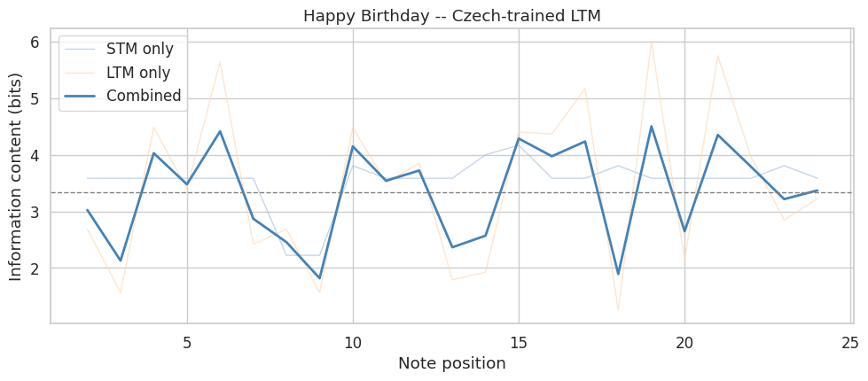
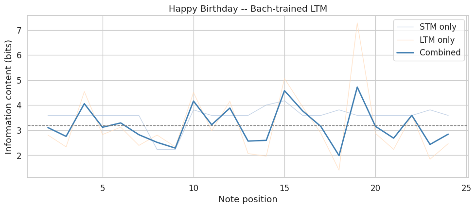
Reading this comparison#
Setup: two long-term models (LTMs) are trained on different corpora — one on 43 Czech folk songs, one on 370 Bach chorales — and both are tested on the same melody, Happy Birthday. Each LTM is blended with a short-term model (STM) that learns the piece itself as it plays.
The three lines: STM only is surprise judged purely from notes already heard in this piece. LTM only (tan) is surprise judged purely from the trained style. Combined (dark blue) blends the two, weighted by each model’s confidence — this is the actual IDyOM-style prediction.
Mean surprise: the Czech-trained listener averages 3.340 bits; the Bach-trained listener averages 3.181 bits. Slightly lower for Bach — this listener finds Happy Birthday marginally less surprising overall.
Most surprising note: both listeners flag the same note — the C at position 19 — as the single biggest surprise, though the Bach-trained listener rates it as more surprising (4.717 bits vs. 4.503 bits).
The takeaway: the same melody produces a different surprise contour depending on what corpus trained the listener. This is the central claim of Part 6 — surprise isn’t a property of the notes alone, it’s a property of the notes plus the listening history brought to them.
One thing worth poking at: both listeners agreeing on which note is most surprising (position 19) raises a question — is that genuinely something unusual about that note regardless of training corpus, or a coincidence in this one example? Worth listening to that moment in the melody to judge for yourself.
# The IDyOM sweep below recomputes a blended surprise value many times --
# this cell can take a little while to run.
from utils import stm_information_content, ltm_information_content, information_content
from utils import train_ltm_model, ltm_information_content, \
stm_information_content, combine_ltm_stm, \
information_content
ltm_czech = train_ltm_model('../data/Essen/Czech', by='pitch_class')
ltm_bach = train_ltm_model('../data/humdrum_scores/Bach/Chorales',
by='pitch_class')
# combine_ltm_stm() sets the STM/LTM balance automatically (by each
# model's confidence). To literally sweep "0% STM / 100% LTM" through
# "100% STM / 0% LTM" as the spec asks for, we use a small local helper
# with an EXPLICIT, fixed weight instead of the automatic one.
def mean_ic_at_weight(stm_df, stm_probs, ltm_df, ltm_probs, w):
'''Mean information content when blending STM and LTM with a fixed
weight w (w=0 -> pure LTM, w=1 -> pure STM), rather than letting the
two models' relative confidence set the weight automatically.'''
merged = stm_df.merge(ltm_df, on=['position', 'symbol'], suffixes=('_stm', '_ltm'))
stm_pos_to_idx = {p: i for i, p in enumerate(stm_df['position'])}
ltm_pos_to_idx = {p: i for i, p in enumerate(ltm_df['position'])}
ics = []
for _, row in merged.iterrows():
p_stm = stm_probs[stm_pos_to_idx[row['position']]]
p_ltm = ltm_probs[ltm_pos_to_idx[row['position']]]
combined = {s: w * p_stm[s] + (1 - w) * p_ltm[s] for s in p_stm}
ics.append(information_content(row['symbol'], combined))
return float(np.mean(ics))
stm_df, stm_probs = stm_information_content('../data/happy_birthday.krn', n=3, by='pitch_class')
ltm_df_czech, ltm_probs_czech = ltm_information_content('../data/happy_birthday.krn', ltm_czech)
ltm_df_bach, ltm_probs_bach = ltm_information_content('../data/happy_birthday.krn', ltm_bach)
stm_weights = [0.0, 0.1, 0.2, 0.3, 0.5, 0.7, 0.9, 1.0]
czech_curve = [mean_ic_at_weight(stm_df, stm_probs, ltm_df_czech, ltm_probs_czech, w)
for w in stm_weights]
bach_curve = [mean_ic_at_weight(stm_df, stm_probs, ltm_df_bach, ltm_probs_bach, w)
for w in stm_weights]
fig, ax = plt.subplots(figsize=(8, 5))
ax.plot(stm_weights, czech_curve, marker='o', label='Czech-trained LTM', color='steelblue')
ax.plot(stm_weights, bach_curve, marker='o', label='Bach-trained LTM', color='coral')
ax.set_xlabel('STM weight (0 = pure LTM, 1 = pure STM)')
ax.set_ylabel('Mean information content (bits)')
ax.set_title('Happy Birthday: surprise as a function of LTM/STM balance')
ax.legend()
plt.tight_layout()
plt.show()
Trained LTM (n=3, by=pitch_class) on 43 piece(s).
Trained LTM (n=3, by=pitch_class) on 0 piece(s).
{kind=link}
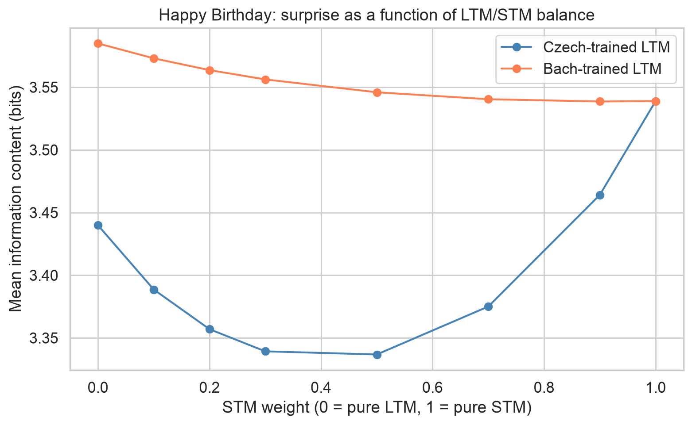
Reading the STM/LTM sweep#
At weight 0 (pure LTM), the two curves sit apart: a Czech-trained listener and a Bach-trained listener disagree about how surprising Happy Birthday is, because each is judging the melody purely against a different prior style. As the STM weight rises, both curves drop sharply and converge – the steep elbow near x=0.1 is the point where even a small amount of direct exposure to the actual notes of the piece starts to dominate over whatever style the listener arrived with. By weight 1 (pure STM), the two listeners agree almost completely, because neither is using prior style knowledge anymore – both are just predicting the next note from what they’ve already heard of this piece. This is the same shape Figure 6.5 shows for information content across note position: differently-trained listeners diverge most when prior knowledge matters most, and converge as within-piece learning takes over. The difference is that Figure 6.5 plots divergence across the melody’s timeline for fixed listeners, while this plot holds the melody fixed and varies how much weight a listener gives to prior knowledge versus what they’re hearing right now.
What IDyOM leaves out#
Siromoney and Rajagopalan (1964) analyzed Carnatic ragas and found
structural principles – gamaka (ornamentation), microtonal
inflection, raga-specific melodic grammar – that have no equivalent
in a pitch-class or scale-degree n-gram model. IDyOM-style models were
built around, and validated against, Western tonal listeners. The
LTM/STM architecture is general, but the alphabet (pitch_class or
scale_degree) and the very idea of a “note” as the unit of
prediction both encode Western assumptions.
A model trained on Carnatic ragas using a 12-pitch-class alphabet would throw away exactly the information (microtonal inflection) that makes raga performance what it is. The model isn’t wrong, exactly – it’s answering a question that was never asked in the tradition it’s being applied to.
Discussion#
Across today’s notebook we made (or tested) three claims:
Entropy increases diachronically in the Western art music corpus (Hiller and Bean’s claim, tested in Part 3).
Harmonic and melodic entropy are correlated within Bach’s chorales (tested in Part 5).
TF-IDF finds melodic/harmonic patterns that are genuinely distinctive across traditions, not statistical noise (tested in Part 4).
Email to Dan#
(As an email to Dan) answe the following:
Which (if any) of today’s three parts (entropy over time, TF-IDF, or IDyOM) changed how you think about your own corpus project, and how?
What is one representation-choice decision you now need to make explicitly, that you had been making implicitly?
What is one thing in this notebook you do not yet trust, and what would it take to convince you?